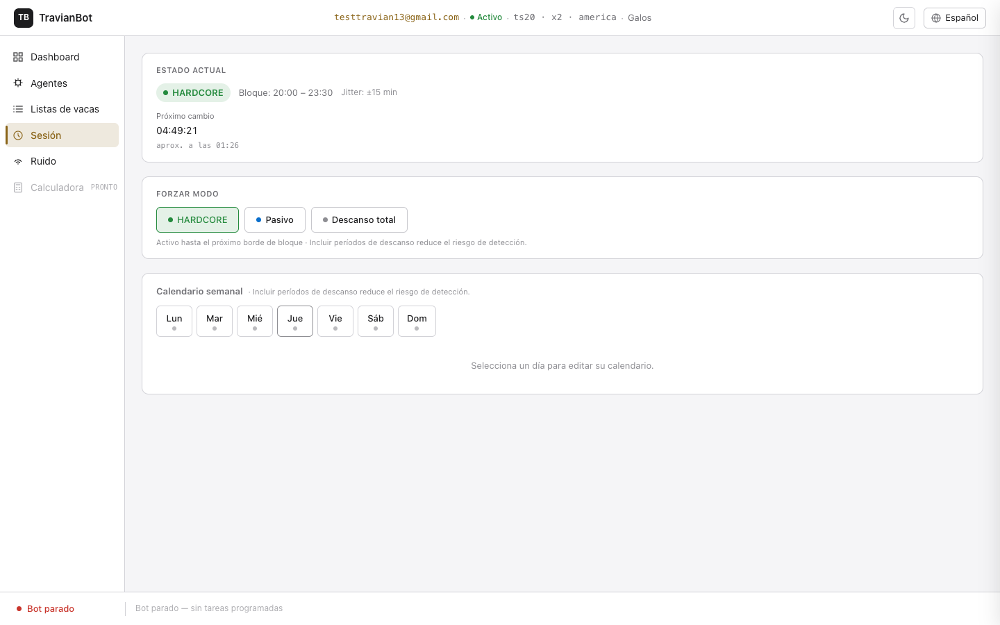
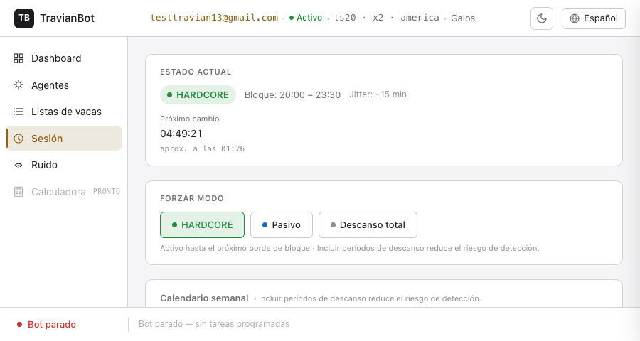
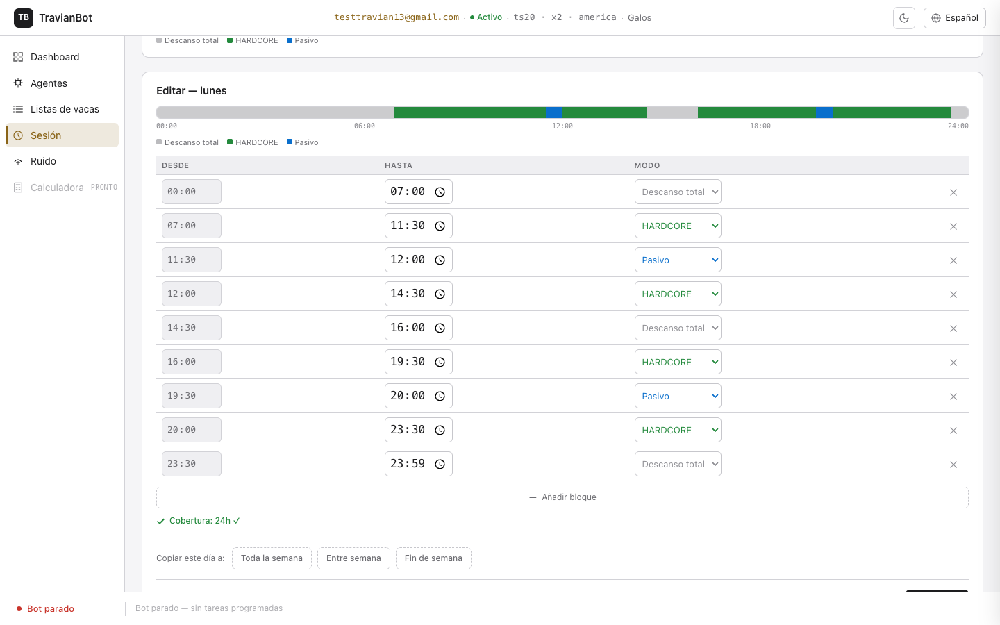
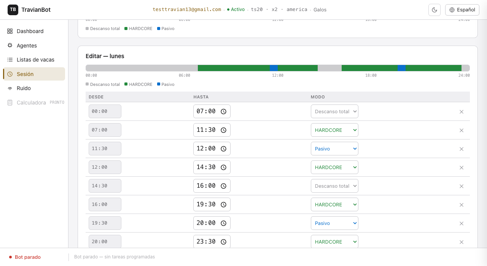
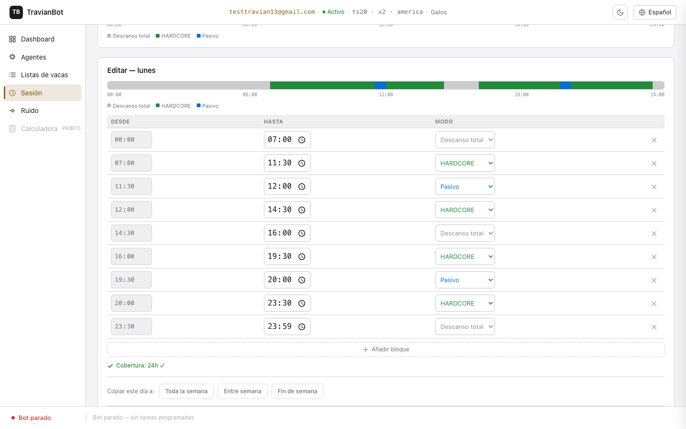
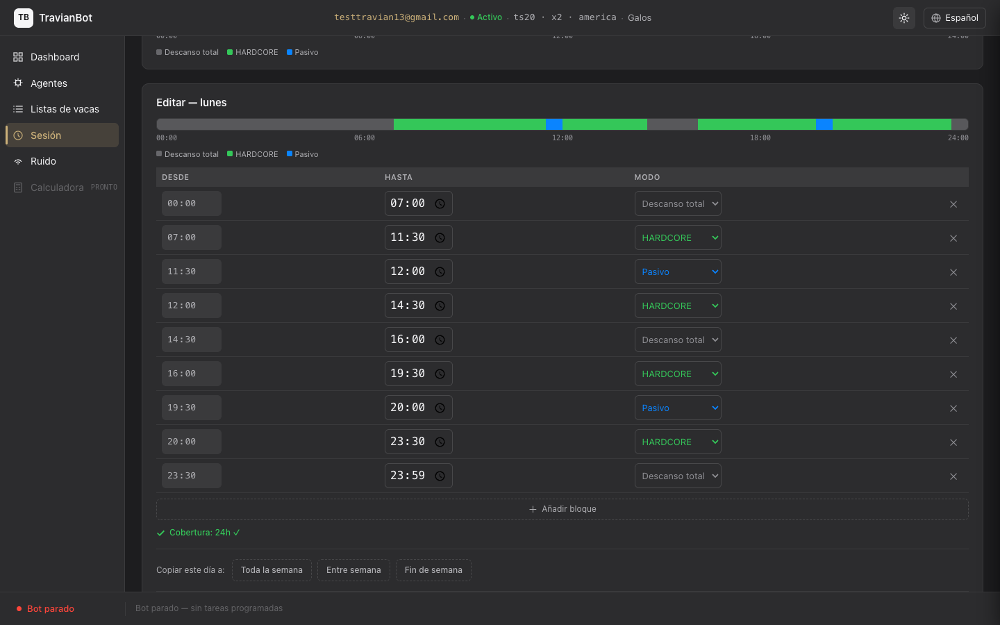

Sesión humana
La pestaña Sesión controla cuándo y cómo actúa el bot a lo largo del día. Configurando un calendario de actividad que imite tus hábitos reales reduces el riesgo de que Travian detecte que no eres un jugador humano.
Vista general de la pestaña Sesión
Para acceder a esta pantalla, abre el mundo desde la sección Cuentas y haz clic en Sesión en el sidebar izquierdo del mundo.

Pestaña Sesión — vista completa con bot en modo HARDCORE activo
Los tres modos de actividad
El bot puede estar en uno de estos tres modos. Entender la diferencia es clave para configurar un calendario que parezca humano:
Panel de estado actual
Siempre visible en la parte superior de la pestaña. Muestra de un vistazo qué está haciendo el bot ahora mismo y cuánto tiempo falta para que cambie de modo.

Panel de estado — bot en HARDCORE, bloque 20:00–23:30, próximo cambio en ~4 h 49 min
Qué significa cada dato
| Dato | Qué es |
|---|---|
| HARDCORE | El modo activo ahora mismo. El color y el texto cambian según el modo: verde para HARDCORE, azul para Pasivo, gris para Descanso total. |
| Bloque: 20:00 – 23:30 | El bloque horario configurado en el calendario que corresponde a este momento del día. |
| Jitter: ±15 min | El margen de variación aleatoria en los bordes de cada bloque. Si el bloque acaba a las 23:30, el bot puede cambiar de modo entre las 23:15 y las 23:45. |
| Cuenta atrás (04:49:21) | Tiempo que falta para el próximo cambio de modo (ya incluye el jitter aleatorio calculado). |
| aprox. a las 01:26 | Hora estimada a la que ocurrirá el próximo cambio (con jitter aplicado). |
Si hay un override activo
Cuando has forzado un modo manualmente, aparece una barra adicional debajo del panel de estado indicando qué modo está forzado, cuánto tiempo falta para que expire y un botón Cancelar override para volver al calendario antes de que expire.
Forzar modo (override manual)
La sección Forzar modo te permite cambiar el modo del bot inmediatamente, sin esperar al próximo cambio de calendario. Es útil cuando algo inesperado ocurre: te vas a dormir antes de lo previsto, necesitas que el bot pare ahora, o quieres activarlo aunque el calendario diga que debería descansar.
Panel "Forzar modo" — el botón del modo activo aparece resaltado
Los tres botones
| Botón | Qué hace | Cuándo usarlo |
|---|---|---|
| HARDCORE | Activa operación completa hasta el próximo borde de bloque del calendario. | Si el calendario dice que deberías descansar pero necesitas que el bot actúe ya (p. ej., tienes tiempo libre fuera de tu horario habitual). |
| Pasivo | Reduce la actividad (solo listas de vacas ocasionales) hasta el próximo borde de bloque. | Si vas a estar medio presente y quieres que el bot no sea agresivo pero tampoco pare del todo. |
| Descanso total | Para el bot completamente y cierra Chrome hasta el próximo borde de bloque. | Si te vas a dormir antes de lo habitual o necesitas que el bot no haga nada durante un rato. |
Calendario semanal
El calendario semanal te permite configurar qué hace el bot hora a hora, y de forma distinta para cada día de la semana. Un lunes laborable y un sábado con tiempo libre tienen horarios de juego distintos — el calendario lo refleja.

Calendario semanal — lunes seleccionado con barra de timeline y editor de bloques abierto
Selector de días
La fila de 7 botones (Lun, Mar, Mié, Jue, Vie, Sáb, Dom) muestra el día seleccionado con borde dorado. Cada botón tiene un pequeño punto de color que indica el primer modo del día. Si un día nunca ha sido configurado, muestra la etiqueta DEFAULT debajo del nombre.
Barra de timeline 24h
La barra proporcional de colores muestra de un vistazo el horario completo del día seleccionado: verde para HARDCORE, azul para Pasivo, gris para Descanso total. Los segmentos son proporcionales a la duración de cada bloque. Debajo de la barra hay marcas de hora (00:00, 06:00, 12:00, 18:00, 24:00) y una leyenda de modos.

Barra de timeline — segmentos proporcionales por modo con etiquetas de hora y leyenda
Editor de bloques
Al seleccionar un día, aparece el editor de bloques bajo la barra de timeline. Cada fila representa un periodo del día con su modo asignado. Puedes modificar los bloques existentes, añadir nuevos o eliminar los que no necesites.

Editor de bloques del lunes — 9 bloques con mezcla de HARDCORE, Pasivo y Descanso total
Cómo funciona la tabla
| Columna | Descripción |
|---|---|
| Desde | Hora de inicio del bloque. Es de solo lectura: el inicio de cada bloque es siempre el final del bloque anterior (los bloques son continuos). Solo el primer bloque siempre empieza a las 00:00. |
| Hasta | Hora de fin del bloque. Editable con el selector de hora nativo del sistema. El último bloque debe terminar a las 24:00 (medianoche). |
| Modo | El modo que tendrá el bot durante este bloque: HARDCORE, Pasivo o Descanso total. |
| [X] | Botón para eliminar el bloque. No aparece si solo hay un bloque (no se puede quedar el día sin ningún bloque). |
Indicador de cobertura
Debajo de la tabla aparece el indicador Cobertura: 24h ✓ en verde si los bloques cubren el día completo sin huecos ni solapes. Si hay un problema, muestra en rojo qué franja horaria falta cubrir o dónde hay solapamiento. El botón Guardar permanece desactivado hasta que la cobertura sea válida.
Añadir un bloque
El botón + Añadir bloque inserta un nuevo bloque al final del día, con inicio en el final del último bloque y fin en 24:00. Después puedes ajustar la hora de fin del nuevo bloque y asignarle el modo que necesites.
Jitter de bordes de bloque
Cada borde de bloque (la hora a la que el bot cambia de modo) tiene un margen de variación aleatorio de ±15 minutos por defecto. Si un bloque termina a las 23:30, el bot puede cambiar de modo en cualquier momento entre las 23:15 y las 23:45.
Este margen es deliberado: un jugador humano no empieza a jugar exactamente a las 08:00:00.000. Sin jitter, el bot cambiaría de modo siempre a la misma hora exacta cada día, lo que sería fácilmente detectable como comportamiento automatizado.
Relogin automático al salir de Descanso total
Cuando el modo cambia de Descanso total a HARDCORE o Pasivo (ya sea por el calendario o por un override manual), Chrome estaba cerrado. El bot necesita volver a autenticarse en Travian. Este proceso ocurre automáticamente, sin que tengas que hacer nada.
Si el relogin falla
Si el bot no puede conectar con Travian (error de red, servidor caído), espera 10 minutos y vuelve a intentarlo. Si sigue fallando, espera 20 minutos, luego 40, con un máximo de 60 minutos entre intentos.
TRAVIAN_BOT_SECRET_KEY) no está disponible
o las credenciales guardadas están dañadas, el bot entra en estado de error y no reintenta
automáticamente. Verás el error en los logs del servidor. Para resolverlo, corrige las
credenciales y reinicia el bot.
Modo oscuro
La pestaña Sesión funciona correctamente en modo oscuro. El tema sigue la preferencia del sistema por defecto y puede cambiarse manualmente con el botón de luna/sol en la barra superior del dashboard.

Editor de bloques en modo oscuro — misma información, superficies grafito
Tarea: monitorizar el estado del bot
-
Abre el mundo desde la sección Cuentas y haz clic en Sesión en el sidebar.
-
El panel Estado actual muestra el modo activo ahora mismo con un badge de color.
-
Lee la cuenta atrás para saber cuánto tiempo falta hasta el próximo cambio de modo. La hora aproximada aparece debajo ("aprox. a las HH:MM").
-
Si hay un override activo, lo verás en una barra adicional con su propio countdown. Puedes cancelarlo si ya no lo necesitas.
Tarea: forzar un descanso de emergencia
Situación: te vas a dormir antes de lo habitual y quieres que el bot pare ahora mismo.
-
En la sección Forzar modo, haz clic en el botón Descanso total.
-
El botón muestra brevemente un indicador de carga. Espera a que confirme.
-
El panel de estado se actualiza mostrando el override activo con su cuenta atrás hasta el próximo borde de bloque del calendario.
-
En el próximo ciclo del WorldAgent (unos segundos), Chrome se cerrará y el bot entrará en Descanso total.
-
Al llegar al borde de bloque del calendario, el override expira y el bot retoma el calendario automáticamente (incluido el relogin si el siguiente modo es activo).
Tarea: configurar el calendario de un día
-
En la sección Calendario semanal, haz clic en el día que quieres configurar (p. ej., Lun).
-
Aparece la barra de timeline del día y el editor de bloques. Si el día nunca ha sido configurado, el editor muestra el aviso "Usando configuración por defecto. Edita para personalizar."
-
Ajusta las horas de fin de cada bloque con el selector de hora nativo. Al cambiar un campo, la barra de timeline se actualiza en tiempo real para reflejar los cambios.
-
Cambia el Modo de cada bloque con el selector desplegable (HARDCORE / Pasivo / Descanso total).
-
Si quieres añadir un periodo nuevo, haz clic en + Añadir bloque.
-
Asegúrate de que el indicador Cobertura: 24h ✓ aparece en verde. Si hay un hueco o solape, aparece en rojo indicando qué franja falta.
-
Haz clic en Guardar. Si todo es correcto, aparece un aviso de confirmación. Los cambios se aplican en la próxima transición de bloque del bot.
Tarea: copiar el horario a otros días
Si quieres aplicar el mismo horario a varios días a la vez (p. ej., de lunes a viernes todos iguales), usa la función de copia rápida del editor.
-
Configura el horario del día que quieres usar como plantilla (p. ej., Lunes) y asegúrate de que la cobertura es válida (24h ✓).
-
Desplázate hasta la sección Copiar este día a: debajo de la tabla de bloques.
-
Haz clic en uno de los tres presets:
- Toda la semana — aplica a los 7 días
- Entre semana — aplica a lunes, martes, miércoles, jueves y viernes
- Fin de semana — aplica solo a sábado y domingo
-
Los presets se aplican secuencialmente. Espera a que todos terminen (el indicador de carga desaparecerá cuando estén listos).
Capturas tomadas el 2026-06-04 sobre la versión de producción en
localhost:5173.🔖 Última revisión: 2026-06-04